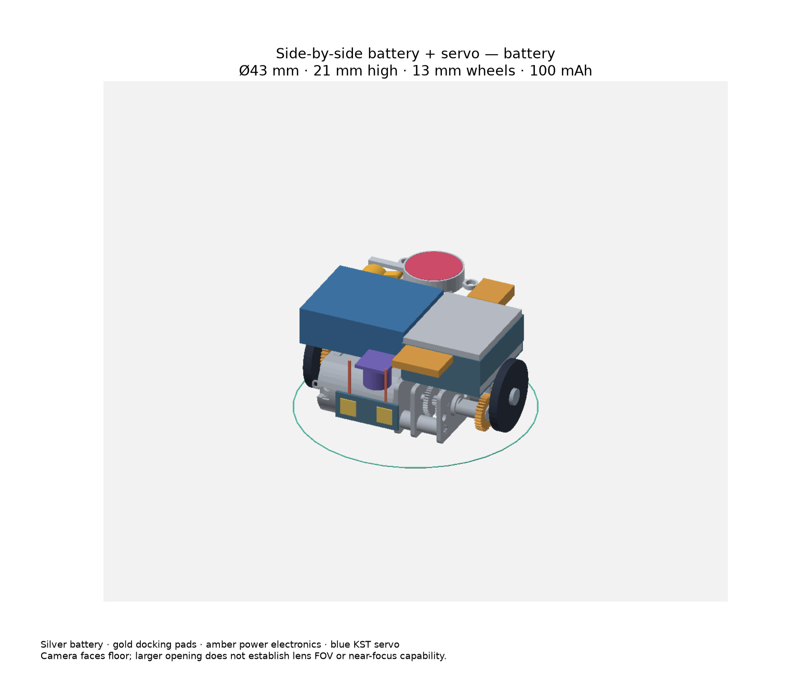
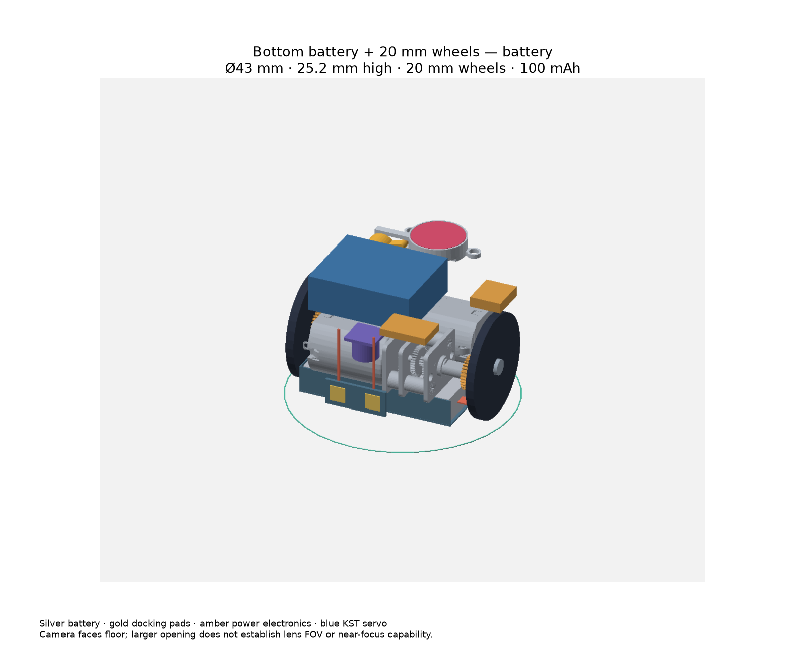

A · Compact layoutBattery beside the servo21.0 mm high · 13 mm wheelsA shorter, thicker cell shares the servo layer. Saves 4.2 mm compared with the previous battery stack.Explore A in 3DCAD ZIP
B · Larger wheelsBattery below the motors25.2 mm high · 20 mm wheelsRaises the motors toward the middle of the body and gives the camera more floor clearance.Explore B in 3DCAD ZIP